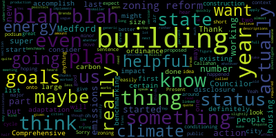
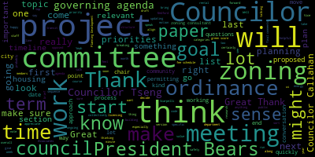
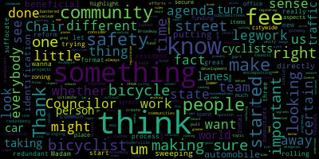
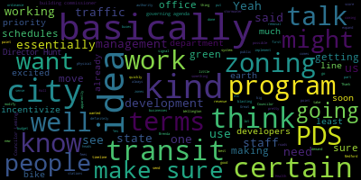

[SPEAKER_06]: Councilor Campbell?
[Callahan]: Present.
[SPEAKER_06]: Councilor Nemex?
[Collins]: Vice Mayor Collins? Present. There will be a meeting of the Planning and Covering Committee, November 31st, 2024. The purpose of this meeting is to review the 2024-2025 Council Covering Agenda. as amended at the January 24, 2024 Committee of the Whole.
[Callahan]: Sorry, I cannot hear you. Can you move the thing onto the podium, maybe? Yeah, good idea. With air conditioning. Is this better?
[Collins]: How about this? Great, I can hear myself. So this is our first meeting of the planning and permitting committee. Vice Chair Leming is unable to be present for this meeting because he has a prior commitment, but he is the vice chair. So much like our first committee meeting for the Administration and Finance Committee last night, the purpose of this meeting is to go over the section of the 2024-2025 Council Governing Agenda that pertains to projects in this committee. So we have a bunch of projects and papers that have already been allocated to this committee for working on and discussing, and there are also papers in committee from previous terms of the Council, we can take a look at that section of our agenda, so to speak. It hasn't been totally fleshed out yet, but it will in coming weeks by myself and President Barras and other members of this committee. So I think much like last night, what it probably makes sense to do is to just quickly run through what is currently in the governing agenda under the planning and permitting committee auspices. Sponsors of any projects can give a brief synopsis or summarization of goals of those projects as they put forward. If anybody has questions about new or old projects or papers in this committee, totally fair game. This is the time to talk about that. There's a number of very large projects that will kind of be overarching in this committee throughout the term, in addition to ones that might be more quickly dispensed with. So we'll also take a look at the draft timeline, which, of course, can be amended over the course of the term. Do any councilors have comments they'd like to make before we start taking a look at our governing agenda? Hearing none, let me work on sharing my screen so we can look at that together. All right, is my screen visible for the, say, agendas and minutes at the top? Okay, great. Thank you, Mr. Clark. So just proceeding right along to the section of the governing agenda for the planning and permitting committee. We went over this in some detail in our committee of the whole about the governing agenda overall, so I'm not going to go into great detail about, you know, we also have sections of our code of ordinances that just live in here. And I think this will probably be more relevant for other committees than it will be for ours. The thinking that if it comes the time for one of our recurring meetings and there's nothing to work on, we can be looking into our code of ordinances to bring up to date other ordinances that fall under our jurisdiction. I don't think that'll be a problem for this committee. I think we have a ton to work on. I don't think we'll have a lot of dead time during our meetings. So we can always revisit this first section if we need to. So it makes sense to first talk about or at least first look at zoning reform. This is a huge project. This will probably organize most of the other projects within this committee over the course of the next 23 months. President Bears and I have initiated, I mean, this project has been initiated at the very end of last term. The council selected a zoning consultant to work with this council to structure this process to provide you know, specialized expertise in implementing. the comprehensive plan, the housing production plan, the climate adaptation plan, other known goals and shared values that this community has, that the administration has, that this council has, and make sure that those are borne out in a comprehensive review and updating of the zoning process. And we're working on finding a date for Planning, Development, and Sustainability staff and the zoning consultant to come before this committee just to serve as a public introductory meeting. And we can talk about the timeline and structure for that project, Councilor Callahan.
[Callahan]: I just was hoping that we can, for all of these, have a status in each of these. I think it's super helpful to have a status. So even zoning reform, it's helpful for us, but also for the public to know, oh, there was zoning reform. There was a minor zoning reform that happened last cycle, but we expect to be doing more major zoning reform. But I think even for any of the ordinances and things, even if it's not started, it would be great to have a status put in there.
[Collins]: Thank you, Councilor Harreld. And just to clarify, do you think what would be valuable is sort of like goals or maybe like last action taken? This is why this is here right now.
[Callahan]: So status being things like not started, proposed, like I don't know what they all are going to be, but like a status. And if there's anything that can be easily put into like a short sentence for people to give people any context around that.
[Collins]: Great. Thank you. Just making a note of that. And I think we can definitely, as we start to spin up our process of sort of end of month updating of the governing agenda, we can certainly workshop that and figure out a way to just quickly make sure that that like one or two sentences for each project is being revised. So this, the structuring, the breaking down this very large two-year project into manageable pieces is something that this committee will be working on in concert with NS Associates, which is the zoning consultant that this council selected, and Planning Development and Sustainability staff. But the overall approach, I think, will be to take our ambitious goals of reviewing and updating all of our zoning ordinances, find a way to organize that by goal, by topic, by category, so that we can be doing those updates, be making those updates in a way that makes sense and is efficient. There's certainly a lot for us to get through in two years. So what that organization, what that structure looks like is something that we will be meeting about and talking about in coming weeks and months. President Bears.
[Bears]: Thank you. Um, I think, yeah, just to add. That basically what we want to bring to this committee as a starting point is a draft of the categories and, you know. Housing, affordability, housing, production, business development. uses and dimensional requirements, whatever those might be. Then we can develop, co-create a list of goals that we want within each category. Then personally, I mean, obviously, it's up to the chair, but as a member of the committee, I would expect probably almost at least once a month. But one of the reasons this committee is meeting twice a month is that it has this project and then a bunch of other projects. There may be pieces of this project on the agenda every two weeks for this committee to work through. We might say, March, we're going to do housing production, right? So we want to look at. For housing affordability, we want to look at inclusionary this that the other 1st meeting. go through the basics of it, go through an initial proposal. We have questions, updates, and comments. We send that back to our consultants, the NS Associates folks. Maybe we need legal input from the Bobrowsky Silverstein firm. And then that could come back like two weeks later, and we could discuss the amended and updated version, and maybe we move that forward. And I think the other piece of this that we discussed so far was there may be some like low-hanging fruit that we get at right away. In a category, and then there may be some things that need 3, 6, 9 months, you know, or more to get through really big changes and decisions. So, you know, for example, just on the zoning map, the current zoning. the digital map is pretty much ready to go. Even if we're changing the map completely in this term, which may well be what we do, it still benefits the permitting process to have the digital map of the existing zoning in place. So maybe we pass that early and then we pass a new digital map in several months.
[Callahan]: Thank you. Councilor Callahan. Would it be helpful under descriptions and goals if we actually called out housing production plan section 5B to blah, blah, blah, blah, blah, and the climate action plan 2.2.D, blah, blah, blah. So rather than these generic implement Medford Comprehensive Plan, which even I who have read the Medford Comprehensive Plan don't, that's so vague. Would that be a helpful way for us to have a full list, even though I know that would be long? Is there a way for us to maybe each of us take things that we're like, I'm trying to figure out how we can break this into chunks to make it into like a list of things that we actually want to accomplish.
[Collins]: Yeah, I really appreciate that kind of approach to how to work through this. I think that I think that some version of that approach is what we will inevitably end up doing. I think that one way we might come to that approach is we are working with planning development kind of have a two track approach to breaking this down into manageable pieces. I think that our zoning consultant might have a perspective on what categories might make sense to work on together. And then of course, from this council being representatives of the community and being very well versed in these plans, we then, I think it is, in my opinion, as one councilor, I think it's our role to then come to those topics with a set of priorities and say, this is our priority for what we do in the realm of doing something that affects housing stock, housing density, housing character. based on what we know from our plans, based on what we know from constituents. I think that individual Councilors getting very specific on what we would like to do in certain categories, something that we could certainly start to do at any time, and I think that when we are able to sync up with NS associates and planning staff in the next few weeks about what kind of timeline we might be looking at as we work to develop that timeline of what we'll work on when, that might give us some clarity on when could we collectively have those conversations about what's going on our punch list and figure out a process from there. But I agree. I think that I suspect that we all have in our heads those specifics that we're shooting for. And quite soon will come the time, sooner than we know it, will come the time to start implementing those.
[Scarpelli]: Thank you. Thank you, Madam Chair. It's also important as we start in this new format that we're not redundant. So if we have, it's how we're rolling this out, something with the zonal reform. I think that's something so important that, you know, having one Councilor do the legwork, then three other Councilors do the same legwork. And then again, to the community process, then again, I think we, I don't wanna make this more than it has to be in the sense that let's not suffocate. the common resident and the fact that what we're trying to do is great and really highlight and stress certain aspects of what we're doing and certain agenda items. But at the same time, I think zoning could be a little different because it is so important and it is citywide. I think that that's one of the reasons why we spent so much time making sure that we secure the funding for the consultants, making sure that we have the right team in place with the office of community development and making sure that we create something that we're encompassing everybody's efforts. And I think that we, something similar that we use, for example, the way Somerville, when they started their projects, as they started looking at their gateway communities, whether it was lower Broadway, whether it was Assembly Row, it was always done. It wasn't done in a vacuum. It was something very open and transparent where I think that could be I just don't want to have the same thing said over and over again because the redundancy might pull people away from being part of it. And if that makes sense, I'd rather see us work more as a team and show the unity together with the community, especially with what our ultimate agenda is when we push any of our subcommittees through. At least that's my opinion. Thank you.
[Collins]: Thank you, Councilor. I think that's a really important point with anything, and especially with a project of this scale that we've been gearing up to for such a long time. I think it'll be really important. Well, to me, I'm thinking a lot about budgeting time for this project, because it's such a big, ambitious project. And I think that avoiding duplicating efforts will be really crucial. And it dovetails with what Councilor Callaghan was saying about how and when are we getting organized to make sure that we're doing what we want to do. Councilor Tsenglin, President Bears.
[Tseng]: I think Councilor Bears is staying on topic, so if you can go to him first. Great.
[Bears]: Yeah, just super quickly. I think this may be one of the projects where it gets its own document, and it's like, boom, boom, boom, boom, boom. We all agree on a set of categories. I think if exactly for the public, we should say, you know, This meeting is going to be on this topic, not on all 12, you know, we'll agree on the 12 to start or whatever, 7 or 9 or whatever it is. Each meeting is discrete on each topic as best as we possibly can. Maybe there's a little bit of a, we have to do a formal vote formality to move something along. That's been amended. But try to keep the topics clear and each each meeting of this committee. This week, we're talking about Mystic Avenue this week. We're talking about citywide housing affordability this way. We're talking about, you know, what our. corridors are going to look like between our squares, right? And those are just example potential topics. And keep that so that all of us can bring all of our ideas about corridors to the corridors meeting. The public can bring their ideas about corridors to the corridors meeting. Ideally, once since we'll have those kind of sections off first, we can inform people weeks, maybe even months in advance about when we're going to be taking up specific things. It won't be perfect, but I think that's My biggest, I think the biggest advantage of the way that we did committee of the whole before this is it was always on one topic. So it was very clear to everybody what the message of the meeting was. I think one of the things we're going to have to think about and being clear about with this new. committee model is trying to preserve some of that. So that it's not we're meeting on 17 planning and permitting things in one night and people don't know what's what and what's happening. And I think for this project, especially this is going to be, that's kind of at least where I'm coming at it from. And I think where Chair Collins is, and I also think it's also where PDS is and where Innes Associates and the lawyer, you know, that consulting team is, everyone's kind of on the same page. Chunk it out, break it up and be clear. We're not trying to do 12 things at once, but do 12 things relatively in sequence as best as we can. And luckily, we have the advantage of. this group meeting twice a month so we can do a little bit, you know, won't be as much time in between. Or if we need to do two meetings for a really hefty topic, spread it across two weeks, we'll have a little bit more flexibility and maybe we'll find that we need to meet even more. And that's going to be another adventure through this process. But it's similar to how we did the recodification, I think, as well in the last term. Well, across two terms, actually. I'm like, how long has this been in the first my first term? You know, we kind of went through If you look at the zoning ordinance, there's 10 or 11 sections in the new one, and we went through each one. We were looking at dimensional requirements, we're looking at zones and uses, we're looking at all the other special regulations, that kind of thing. I think it'll be hopefully similar here.
[SPEAKER_06]: Right.
[Collins]: By all means. This is my living room, George.
[Bears]: No, we were doing that the other week and I was like, yeah, let's go. I like that. It makes it hard for Adam to take notes though.
[Tseng]: I had a feeling that Zach was going to address some of Councilor Scarpelli's points. I wanted to make sure you spoke first. I did want to add to the zoning thing. So, essentially, I got a chance to sit down with some staff in the Planning and Development Office. for example, Director Hunt, and we kind of talked about gaming through some of the ideas on the governing agenda to see any ideas they had about it, but also how to implement it. And she highlighted that a few of the ideas that we want to work on here would be best done parallel to the zoning effort, if not just in it as well. In particular, the transit demand management idea that Councilor Leming and I have been working on, the green score idea in here as well. Some of the energy ideas, but that's a little bit separate as well. But I just wanted to put it out there that that's the direction that city staff would want to go in with some pieces of the governing agenda to do it while we're doing zoning as well.
[Collins]: Thank you Councilor Tseng I actually think that's a really helpful point to bring up. Let me just so that we can look at this visually, as we're talking about kind of timing of projects. It makes a lot of sense to me especially that those three projects you mentioned would be very relevant to my gosh here it is finally. would be relevant to our zoning work. And I would say to that specific point and to any councilors on this committee, as research into projects continues, as councilors start to get specific on the parameters of projects outside of zoning, especially those that align with zoning, just to feel free to be in communication with me as chair of this committee. One, to keep the governing agenda updated with what we plan to work on and when, but also if they're, say, for example, green score, I think it intuitively makes a lot of sense to work on that at the same time as some, you know, developer and building standards that will be picked into our zoning code. We can make sure that as the timeline for breaking zoning into parts gets solidified with our zoning consultant, we can make sure that we're scheduling these things in alignment.
[Bears]: I'll just add that it was super helpful. We did short-term rentals as part of the zoning recodification, so we have done that before. We took projects that had been proposed individually and put them in through the zoning process.
[Collins]: I may make a suggestion, again, to what Councilor Callahan brought up earlier. I know that we're going to eventually be going, we're going to collectively decide on a sequence through which to work through all of these topics comprised of zoning will decide that collectively will have a draft schedule like all of our other schedules will be amendable. I'm sure that we will all have our separate version of planning and homework and research that will go into the work and the priorities that will take to the zoning discussions. If it feels helpful to Councilors, I would be happy as chair to be sort of repository for those notes, lists, lists of priorities and goals. I know that we are going to be working on sort of, as council leadership, matching our main goals and priorities for zoning overall and bringing those to Innes Associates to help draft that sequence of zoning work to bring to this committee. If councilors feel it'd be helpful to, as they're devising lists of priorities on your own time in preparation for our meetings, I would be happy to be a repository for those ideas and then make sure that they are brought up again when we get to the relevant topics in our zoning work. Anything else on zoning right now? Priorities, questions, questions around timing? Well, we're going to spend a million more hours talking about it, so let's put a pin in it there. We can come back to it later in this meeting if anything else occurs to Councilors or members of the public, but I'll scroll up again to the start of the section on ordinances, and we can run through that list. So like Councilor Tseng mentioned, a lot of our other legislative projects will align with zoning to a greater or lesser extent, and some of them won't, and that's okay too. Just to run quickly down the list of ordinances that are also in this committee, the Condo Conversion Ordinance, this is one that I'm leading on. We started work on this last year. The goal of this is to create some conditions and permitting procedures around when rental units are taken off the market by for-profit developers and turned into condos to make sure that the community recaptures some of that value that is just being realized as real estate value. The status on that is there was a bunch of takeaways and great research questions from our last meeting, which was sometime last fall, that I have to follow up with the building commissioner about. And I hope that we can get about that quite soon and get it passed by May. Next, we have housing home rule petitions. There's a few here. Real estate transfer fee, tenant first right of refusal, and rent stabilization. These were originally proposed I want, oh it was 20, it was 2022, we know from the paper number. I believe the local context for when these papers were introduced to this council was when a particularly visible eviction event was happening in Medford. But we know from the community that petitioning the state for greater power to protect tenants in Medford and do what we can locally to stabilize the cost of rent is something that is important to many people in Medford. And so these are not ordinances, but home rule petitions that we can discuss here in this council. Any questions on these before we move down to a fee schedule? President Bears, would you like to briefly describe the fee schedule project?
[Bears]: Sure, yeah. I think pretty simple. We have the city charges fees for a variety of things. Some of those fees are set by the council, some of them are set by departments, some of it depends on state law, some of it depends on the ordinance. I really think this is a three-step process. One, what are fees that we set? Or maybe we look at all the fees and we can say, here's the ones that we set, here's the ones that we don't. If we don't, say to the group that does set them it's probably time to take a look at these they haven't been updated in a while for the ones where we are the authority for setting them ask departments to submit feedback on when was the last time you believe the fee schedule was updated what are similar fees and and you know comparable communities and then we can look at those for different departments and different sections of the city and update the fee schedule to be more reflective of the cost for administering these various programs for each department as well as incentivizing the behaviors that we want to incentivize by having them and as well as making sure that we're in line with what, you know, we don't want someone crossing the street, the border from Arlington into Medford and saying, well, in Arlington, this costs $100 and in Medford, it costs $10 because A, it shouldn't be that different across the street from each other. B, quite frankly, the city of Medford will be leaving some revenue on the table and we know that there is a need for revenue to support many of our city departments. That is the intent here. And I think also in the long term, after we've done a comprehensive assessment of where we are, the goal would be that in the future, every year or two, the council would have a document that they could look back on and say, okay, we know that the fees for X, Y, and Z were updated in 2022 or 2024. We're going to review it in 2026 or whenever they may want to be, whatever schedule they may want to. a future council may want to look at. But at least get that all together, because I do know, talking to a lot of departments, that their fees have not been updated in a long time.
[Collins]: Thank you, President Bears. Is your thinking at this point that this will be a process we go through department by department? Or do you have any other thoughts on how we might meet this out over the term?
[Bears]: I don't think it needs to be that onerous. I think it would be kind of a starting point just Maybe at one meeting, it could just be a quick agenda item to send a request out to all departments for the fees that they have and what they want updated. Once we get all that information back outside of meeting, you or I or some group of the committee could compile all that information into a clear document. Then we can have a meeting where we review it, get any recommendations from department heads, make our own recommendations, and then proposed or recommended out of this committee changes to the regular meeting to the full council. So I think maybe three or four meetings over six to 12 months, depending on how quickly departments are able to get back to us with information and how many questions and recommendations we may have.
[Collins]: Sounds great. Thank you. Councilor Tseng.
[Tseng]: Thanks. I think that sounds good to me. I do know of certain, like just being in City Hall, I've heard about certain ideas that are being bounced back and forth about this resolution in terms of giving us some recommendations to adjust. There was some talk that there might be some certain fees that we might need to move a little faster on just because of how Renting schedules are like leasing schedules, etc. Getting people, making sure that there's an education campaign before we raise some of the fees. And so it might be helpful for those department heads to give us a sense of how quickly, like how much of a priority certain changes are.
[Bears]: Yeah, just for me, if departments have specific plans, that's great. That's even easier. I know DPW just did a whole batch of changes because there were many fees that were just under the discretion of the commissioner.
[Collins]: Great. Thank you, President Bears, Councilor Tseng. Sounds like that will be pretty straightforward to dispense with, hopefully meaningful for many of our city departments. Continuing down the line, next cycling safety ordinance. This is a project that I proposed, I haven't formally proposed it, project that I have proposed to propose. The goal of this ordinance would be to align with the city's complete streets project and work with the DPW to see if there are some standards we can create legislatively to ensure that bike safety infrastructure projects are always considered when road renovation is already being done in the city or see what else we can do along those lines towards the value of increasing safety for all road users.
[Tseng]: We always talk about the need for more revenue, and I think this is one of the places where it is apparent. The city is currently lacking some funds in terms of painting bike lanes on the roads, just getting the physical paint. In terms of hiring the staff to lay down the paint on the roads, department heads have said that it's a priority for them going forward to advocate in the new budget. I think it's something that we should put on our radar when we think about the upcoming budget.
[Scarpelli]: Good to know.
[Collins]: Thank you, Councilor Tseng. Councilor Scarpelli.
[Scarpelli]: Thank you, Council Chair. So something that I've talked to, I know that it's been bantered around the state, but I think it's something that as we look at this topic and looking for how to fund it, I think that one of the things we might want to consider is bringing a state delegation in. and working on a statewide mandate of cyclists registering their bicycles. And with that fee, supporting any safety recommendations and upgrades. So to assist with what our goals are for cycle safety. And I think, as we know, we have probably the most Um, if everybody had the respect of a bicyclist, I think it could make the world a lot better, but we also have, um, those rogue cyclists that tend to cross the line. And, and, and I think that's what makes at times a site cycling world, a little difficult for some people to, to, um, engage with because they think that, you know, uh, the content of, bicyclists don't follow the rules, or if a car was taking a right turn, I heard this through the, this bicycle lanes is confusing because something simple as a person taking a right turn and a bicyclist cutting in behind traffic and ramming into the side of your car and then you have damage to your automobile and the person rides away. and not having an identification piece for a police report or anything to that nature. No different than how the license plates started with automobiles, but I think it's something that putting a fee to that and having an identification number, it could be beneficial for what the greater plan is, and that's more safety, more bike lanes, and where it's, you know, when we started raising fees in the community I work in, the city was in, they were an uproar for the fact that the fees were all was they were all increased. But then when you understood that all traffic and parking fees go directly to youth programming and schools, then people don't mind. And, you know, for street sweeping, weekly street sweeping, people see the streets being swept us. Okay, we understand now, if you're going to break the law, that's what it is. So when you look at identified fee structure, and you're looking for something like bicycle registration, and putting that money directly into our roads and for safety purposes, I think it's hugely beneficial. So my thoughts.
[Collins]: Thank you, Councilor Scarpelli. I appreciate that. And I think it's also a really an evergreen reminder of how important it is in the conversation of the fee schedule more broadly. So important to be really transparent with the public about, yes, it's a revenue thing, but in service of the things that we all need and see the lack of funding and I think that really makes it a less bitter pill to swallow to realize that this revenue is going towards things that are chronically underfunded and then we'll all be happy to see better funded. Well, speaking of transportation, we next go to Transportation Demand Management. Councilor Tseng, would you like to give us a brief description of this project? Sure.
[Tseng]: Essentially, this is to create a program where we incentivize developers coming into Medford to provide some transport traffic alleviation of some kind. The emphasis of this is basically to try to get developers incentivize renters living there and businesses and employees who work there to use bikes and public transit where possible. We would develop kind of a point system in terms of like if there's extra bike parking or certain shuttles to green line stations or orange line stations, etc. These are all ideas that we would consider. We would essentially work with existing transit demand management authority in the area, which we already are a part of the lower mystic. Transit management authority, and basically see how we can expand to this program. There are also there are already some developments in Wellington that are kind of. like in a program like this, this is basically a proposal to expand that to different zones in the city because we know development and traffic is growing across the city and not just in Wellington. I know Councilor Leming has been working with PDS on it. PDS has asked us to talk to Todd Blake as well. This is one of the ideas that Director Hunt said would be smart to tie in with zoning. We would also have to debate about how closely we align that program to Everett's program, to other programs in the state, or how much writing do we do for ourselves in Medford, whether we want to require that certain developments in certain zones take part in it, et cetera. But very open discussions. I know Councilor Leming is very excited to work on it too.
[Collins]: Very interesting. Thank you. Next, we have some proposed ordinances that I think are linked to energy disclosure and benchmarking. Then we also have the rental license ordinance. Councilor Callahan, were all of these your brainchild?
[Callahan]: So these are definitely out of the climate adaptation and action plan. Really, the energy disclosure and benchmarking are kind of linked. So what other cities have done is to first start with having buildings, usually large buildings above a certain amount, have required energy disclosure. And then after that, after they've been doing that for a few years, then the city can benchmark certain energy goals and have fines for buildings that are not meeting those goals. So it is definitely part of the same, it would be part of, I believe, the same ordinance that would have one thing for a few years and then benchmarking part of it for the next few years.
[Collins]: Great, thank you. That makes that linkage makes a lot of sense. While we're on this topic, let me scroll back down. You could also speak to the rental licensing if you would like. Yeah, thank you. I just wanted to note, I think we would be good at some point soon, not necessarily right this minute, especially since the city clerk has reminded me that the Public Works Committee is beginning at 7 p.m. As these conversations continue on, as we start to get a sequence on paper for the zoning timeline, it would be great to start drafting some goal start dates and end dates for those ordinances, because I don't think we have them yet. So open to hearing thoughts on that at any time, inside or outside of the meeting. Councilor Cheng?
[Tseng]: Yes, this is so apparently the person who wrote Boston's ordinance is working for metric now. Our climate planner, Brenda. Brenda Pike. So she is definitely someone who we should talk to when it comes to these ideas. She's also said apparently the state is doing a lot of stuff on this and so might make sense to see how we coordinate with that. We should also Basically, the PDS offices told me at least that it might be a good use of our time to also send a testimony to the State House on these issues if possible, and to also work with surrounding municipalities to make sure that, you know, kind of all working together and not kind of creating a situation where some of the businesses flee, but otherwise the office is very supportive of the idea.
[Callahan]: Thank you so much. You just reminded me. I also had a talk with Brenda and Alicia about this and heard that the state may be working on something like this. The state's version will only apply to very large buildings. I think our first step is really to investigate, number one, what the state is working on and number two, how quickly that might be done, because being someone who actually knows quite a lot about how state politics works, I know that it could be 10 or 20 years. So we need to understand whether they're actually going to accomplish something or if this is just something that is, you know, quote unquote, being worked on. And then number three, if whatever law they are working on is even going to have any impact in Medford, given the size of most of our buildings. And if not, then we want to consider what could we do that might be like a slightly smaller building size or how we could have impact. I'm super passionate about this because two thirds of our emissions are from buildings. And so this is really and almost all of our buildings are existing buildings. There's like a half a percent gain in buildings per year, maybe, maybe less. So we cannot affect this carbon emissions through new buildings and new construction. Yes, there's new construction on old buildings, but if we really want to get at our carbon emissions, this is something we'll have to consider.
[Collins]: Thank you, Councilor Callahan. That's an exciting project, and it makes sense that our first step should be to investigate the extent to which a possible state legislation might be relevant here, or if we should not bother. waiting for that to become relevant. Let's move quickly through the rest of these projects. Rental licensing, would you like a quick description?
[Callahan]: Yep, I can speak to that. It's basically something that will allow us to reach both some of our climate goals as well as some of our affordable housing goals. It just means that if you're a landlord renting units that you would have to register with the city. Pretty simple. Councilor Tseng?
[Tseng]: Thank you so much. This is another idea that PDS was very, very excited about. They suggested that we actually move this up in our governing agenda timeline to, like, very soon to start talking about it, at least with city staff pretty soon, because we have a new building commissioner coming in. And that building commissioner is trained in a software called CitizenServe, which basically runs training modules like what we would use for rental licensing. for landlords, and so getting that on the agenda of the building commissioner early is their advice. Yeah, and then we would also have to talk to the Board of Health and PDS about it, but people are very excited about this. I know there are some folks who recently left the health department that are very gung-ho about it, but yeah, I think if we can move this up in the timeline, that'd be great.
[Bears]: Just in those discussions, did they feel it should be independent of the zoning reform? Councilor Tseng?
[Tseng]: Sorry, through you.
[Bears]: Did the PDS staff feel like it should be independent of zoning reform? Yes, yes.
[Tseng]: I believe this one, yes.
[Bears]: Yeah, and doing it sooner could make sense. It could help with the good landlord tax credit too, because we're going to need some set of information. And if we're licensing everybody, It helps with a lot of things. It even eventually helps with residential exemption if we ever go down that route.
[Collins]: It would also help with the implementation of the Housing Stability Notification Ordinance. So lots of great reasons to, yeah, which has been, I think, a major challenge in disseminating that. So lots of great reasons to prioritize. Thank you. Moving right along, just in the interest of time. Next, Councilor Tseng, would you like to speak to pesticide regulations, blasting, green score?
[Tseng]: Yeah, I can do all this pretty quickly. Pesticide regulations is basically just in terms of regulating what what the city and business owners can use in terms of landscaping, we would have to basically see what exactly we can do at the local level and to make sure that the city is ready to be in compliance with it as well. But that one's It's relatively simple. On blasting and earth removal, PDS has already done research into it. They've collected the six ordinances from around the state and kind of picked out what they think can be implemented. They have sent it to the fire for feedback and very soon they're going to send it to us to work on. Oh, and for context about blasting and earth removal, that's basically just like projects like on Winthrop, where people are removing big chunks of earth, and we want to make sure that we can at the very least be able to tell neighbors when things are going to happen, but also have a system where there is some sort of permitting so we can kind of Regulate this behavior on the green score. Basically the descriptions and goals kind of speak more to it. Um, it's a lot of it's about stormwater management and making sure that Developers are kind of in line with best practices when it comes to stormwater negotiations. This is something that Director hunts said should definitely be in the zoning process and Basically, we as a council would just need to bring this up when we talk about zoning. Yep, that's those three.
[Collins]: Great. Thank you, Councilor Tseng. And then, like I said up top, we also have some ongoing projects. that are under our jurisdiction for ongoing engagement oversight, including the Subcommittee on Licensing, Permitting, and Signs, chaired by Councilors Scarpelli. And I believe we're having a meeting next week, Tuesday. Great. Thank you. And that will be a subcommittee that meets frequently and as needed to go over those sign applications. We also have some projects in here under ongoing oversight. energy efficiency retrofits for existing buildings, transit signal priority. We have a couple minutes if Councilors want to give a brief overview of those projects.
[Callahan]: Sure this energy retrofits for existing buildings is really right out of the climate action adaptation plan. It's supposed to be something that the planning department is doing this year. Maybe started last year. I think they're actually going to start this year. So I think we just want to have our eyes on it and ensure that that effort is moving forward.
[Collins]: Great, thank you. Councilor Tseng, would you like to briefly describe transit signal priority?
[Tseng]: Yeah, transit signal priority is basically when you modify traffic signals to basically implement a strategy where we cause less delay to transit vehicles like buses to make sure that people can rely better on bus schedules and that buses can travel quicker to incentivize people to take public transit. Essentially, there's also appetite for this in City Hall, but the big problem, as always, is revenue, making sure that we have the money to buy the physical infrastructure we need to modify traffic lights.
[Collins]: Thank you, Councilor Tsenghia. I understand from my conversations with Director Blake that this is a project for which there is a ton of appetite in the city, and we're just lacking some of those crucial millions of dollars to do exactly what we want to do, what we know constituents would love. But I'm sure that there's ways that we can collaborate to move the ball forward this term on that. So thank you for bringing that forward. President Bears?
[Bears]: Thank you, madam president, if I could just comment on the 2 papers in committee. So, the 1st, 1, I think we had a number of issues in my 1st term. Around health and safety issues for tenants, some code related, some not related some. Tenants unions and property managers and conditions that were presented to the council and photographs that were just not acceptable. And I think some of what we're hearing around rental licensing and the sanitarians and the building inspectors wanting a little bit more. teeth in that process. I think that paper and committee could align really well with the rental licensing.
[Collins]: What paper is that, sorry?
[Bears]: It's the 21-070 update on complaints and inspection process for reporting health and safety issues for tenants. Great, thank you. And then 21-543, there's something that's not in here that I don't know if we want to go down this road. Maybe we do, maybe we don't. I'm kind of more leaning in this direction. Councilor Scarpelli will remember an outdoor committee of the whole meeting that we had the Saturday before the 2021 election. We had some on-site meetings at Irving Street and Brooks. We also had an on-site meeting at Cotting West North and Auburn. That was pretty well attended. 25, 30 people were there at that intersection where you have a one-way and you have two one-ways meeting and then a two-way street that goes like this right by. Whole Foods, Walkling Court, the Mystic River, it's a very high traffic area, but not high traffic just for cars, high traffic for pedestrians, strollers, bicyclists. It's a really highly walkable area. It is essentially a walking destination to the grocery store for a whole neighborhood. Todd Blake came out, he presented a whole fantastic series of short-term upgrades that you can put at the site that didn't require this intensive curbing, et cetera, et cetera, would have prevented cars from going down a street, Cotting Street one way, much more effectively. All of this would have been at the cost of, I believe, one moving, not even eliminating, moving one parking spot. That was honestly not even frequently according to, I believe, Mr. Blake went out several times, it's not often occupied. All of that work from the director, from this council, from the 30 residents who showed up and said, hey, this is a great idea, and all of that went to the traffic commission. And then the traffic commission, none of the people who came to our meeting showed up at the traffic commission. One person who would have been affected by the moving of the parking spot showed up at the traffic commission, and the entire thing was put on the table and hasn't been touched in two years. So I got a little bit of a, I'll be honest and axe the grind on this one because I think there's a lot of people in that neighborhood who would feel a lot better off with a little bit tighter of a traffic pattern, a little bit shorter sidewalks, paint based fixes that would make that entire intersection better. So I'm hoping the traffic commission will reconsider, but I think it brings up a bigger question that we may want to consider in this committee. We have a huge agenda. It may not be worth adding in this term, but maybe it is, which is that this council does have the authority to. essentially dissolve the traffic commission and establish a new traffic commission by ordinance. Pursuant to Massachusetts General Law, the traffic commission was passed. The current traffic commission exists as a special act of the legislature from 1958. The two-thirds vote of this council can dissolve it and can establish a traffic commission with different membership. I've spoken to many members of the right now. The traffic commission includes the chief of police. He cannot designate someone else. The director of planning who cannot designate someone else, the director of public works who cannot designate someone else, and then two resident appointments who are not confirmed by this council. It's a pretty rare traffic commission. If you look at similarly constructed traffic commissions across the region, I know for a fact that it is not I think it would be. Particularly convenient for the members of the traffic commission who are the high level executives of major departments of the city to also be serving in that role. Um or at least serving in it at all times, no matter what, without really the ability to And maybe we get down this road in a few months after having further conversations, what a different traffic commission could look like in Somerville. There is a member of the council, the head of the traffic and parking committee serves on the traffic commission. So you have a direct democratic line. around traffic and parking, which currently doesn't exist, without it being all the council and then traffic and parking becoming political decisions and not decisions by experts. But in any case, just want to put that out there as an example of something that a lot of people worked really hard on that most of the people in the neighborhood supported at least a version of. It didn't go anywhere because of how the current structure of the Traffic Commission and how it takes public input. um, is working. So I am, I am hopeful that we will kind of maybe consider something like that, especially given that most of the folks and stakeholders involved, I think would like to see some sort of reform and have a traffic commission that wasn't written by state legislature legislators in 1958. So just my last plug for the day.
[Collins]: Thank you president bears I think, and I appreciate the framework of that comments in the context that we have more than enough in this current governing agenda to work on at this committee this term at the same time. I think, taking into account the perspective that you just shared other anecdotes from the committee. current structure of the traffic commission with mandatory members as opposed to a more representative model. It strikes me as something that's certainly at least worth discussing other models that might make more sense for our community regardless of whether this committee decides to pursue that this term. So with that we've done our speed run overview of everything that we will definitely fully complete this term. Thank you to my fellow councillors for that. For any final comments from my fellow Councilors, I would just like to invite everyone, like I said, when we were finishing up our short conversation about zoning, if Councilors, as we're preparing for our sequential digestion of the zoning topic if Councilors are so moved to submit to me top line priorities for our discussion that we can then batch into categories with the consultant and with planning staff or more nitty gritty versions of those lists. Please feel free to forward those along to myself as chair ahead of time where we can store those for the appropriate meetings when those topics come up. I would also ask Councilors, if there are any projects that are in this committee, once they've been proposed, if they don't currently have start and end goal dates, please do submit those to me. That'll be important as we do the monthly updating of the governing agenda. Any final comments?
[Bears]: I would also just move that the TDM, Transportation Demand Management, and the green score be moved under the zoning reform project, and let's just, we can do that now and not have to worry about coming back around to it, but make it clear that those are two items that we want on the agenda for the zoning. Transportation demand management and the green score.
[Collins]: Was there another energy-related paper that should be in?
[Bears]: Did you say benchmarking or energy disclosure should be under there? I don't know if it was discussions with PDS. Those are just the ones.
[Callahan]: I think there are other things to do with that before we look at any zoning. We have to look at the state legislation and everything else.
[Collins]: Great. So that's a motion from President Bears to move transit demand management and green score under the zoning paper. Do I have a second? Councilor Callahan? On the motion, all in favor?
[RhUNhYl62Oo_SPEAKER_05]: Aye.
[Collins]: All opposed? Motion passes. Any final comments from councilors? Councilor Callahan? I move to adjourn. Motion to adjourn from Councilor Callahan, seconded by President Bears. All in favor? Aye. All opposed? Meeting is adjourned. Thank you.
|
total time: 4.99 minutes total words: 800  |
total time: 20.85 minutes total words: 3358  |
total time: 15.4 minutes total words: 2750 |
total time: 4.99 minutes total words: 738  |
|
total time: 9.03 minutes total words: 1356  |
|||
{kind=link}
{kind=link}
{kind=link}
{kind=link}
{kind=link}